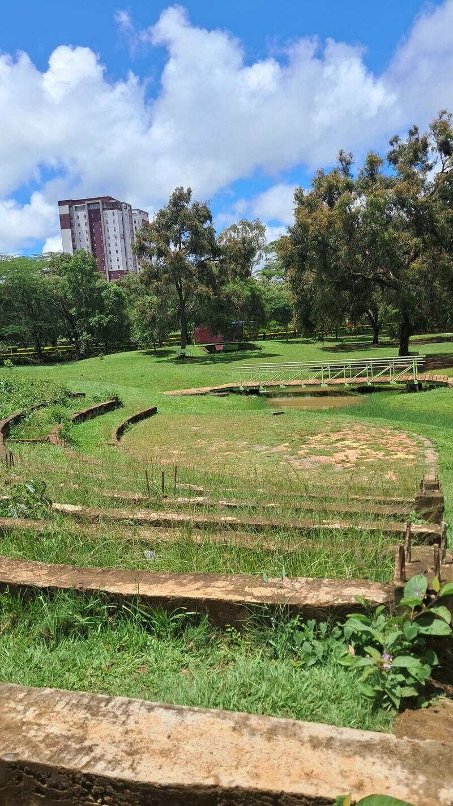

Education
- BSc. Applied Biology, Jomo Kenyatta University of Agriculture and Technology (JKUAT) — 2025 to present
- Kenya Certificate of Secondary Education (KCSE), Machakos Boys High School — 2024
Skills and Competencies
- Microsoft Word, Excel & PowerPoint (advanced formatting and data handling)
- Basic laboratory techniques (microscopy, staining, aseptic handling)
- HTML and CSS (beginner – this portfolio!)
- Field data collection and simple ecological surveys
- Scientific report writing and literature review
- Teamwork and presentation skills
Research Interests
I am particularly interested in biodiversity conservation, the impact of climate change on local ecosystems, water quality monitoring, and the application of molecular tools in species identification. I also enjoy exploring how biotechnology can support sustainable agriculture and environmental restoration in Kenya.
Academic Projects and Certifications
| Project or Certificate | Year | What I learned |
|---|---|---|
| Introduction to Applied Biology lab practicals | 2025 | Safe lab practices, microscope use, and basic experimental design |
| ICS 2216 Applied Computing – Portfolio Website | 2026 | HTML, CSS, client-server model, and basic database design |
| Field visit: Local wetland ecosystem study | 2025 | Observation skills, species recording, and teamwork in the field |
| Certificate in Microsoft Office Essentials (self-paced) | 2025 | Efficient document preparation and data organisation |